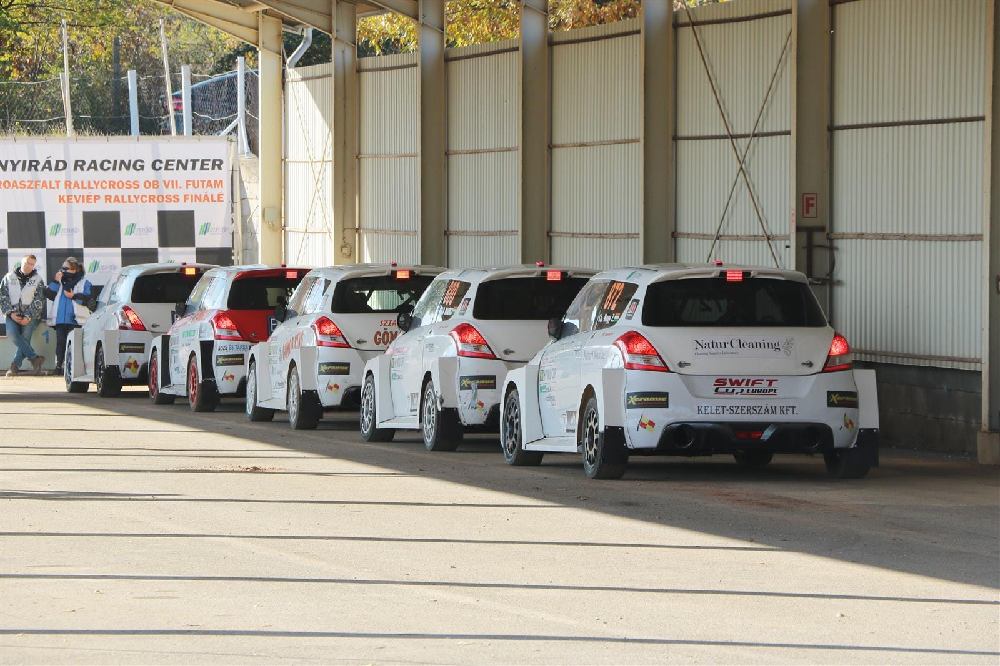
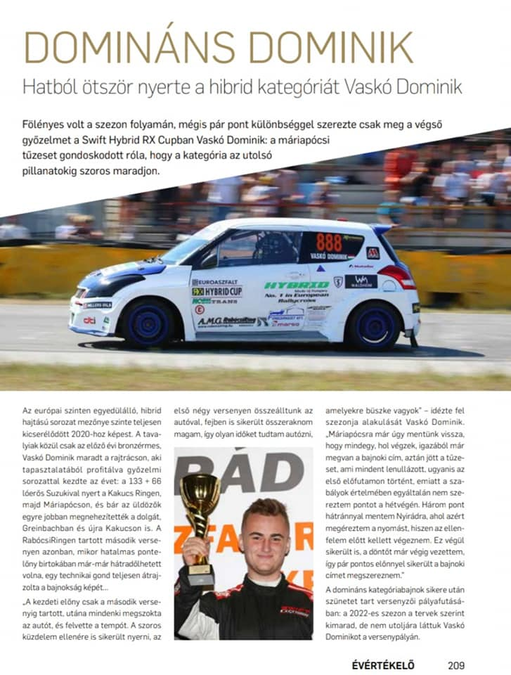
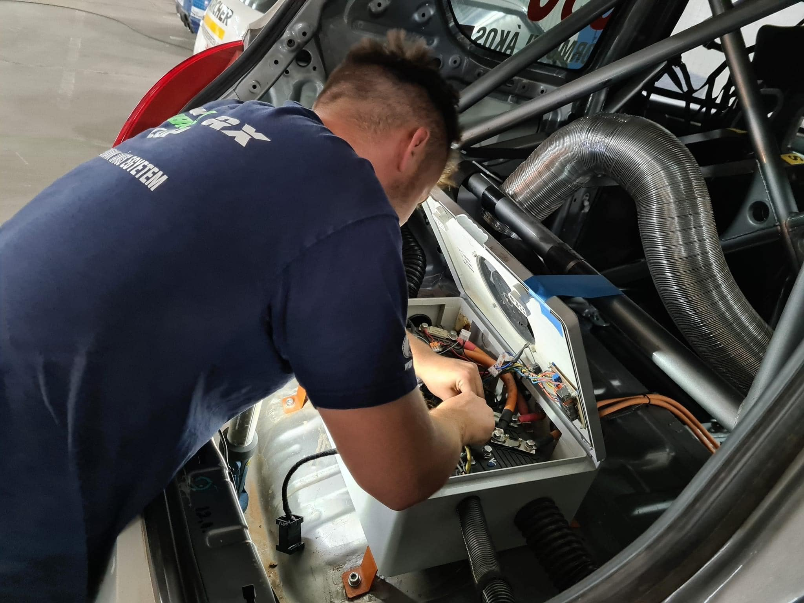
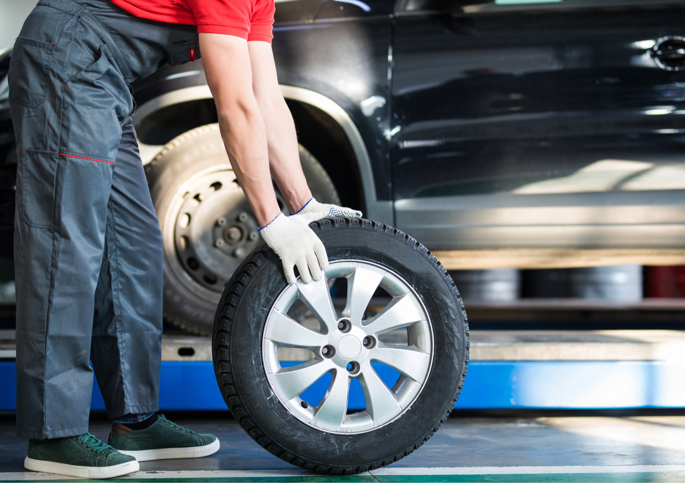
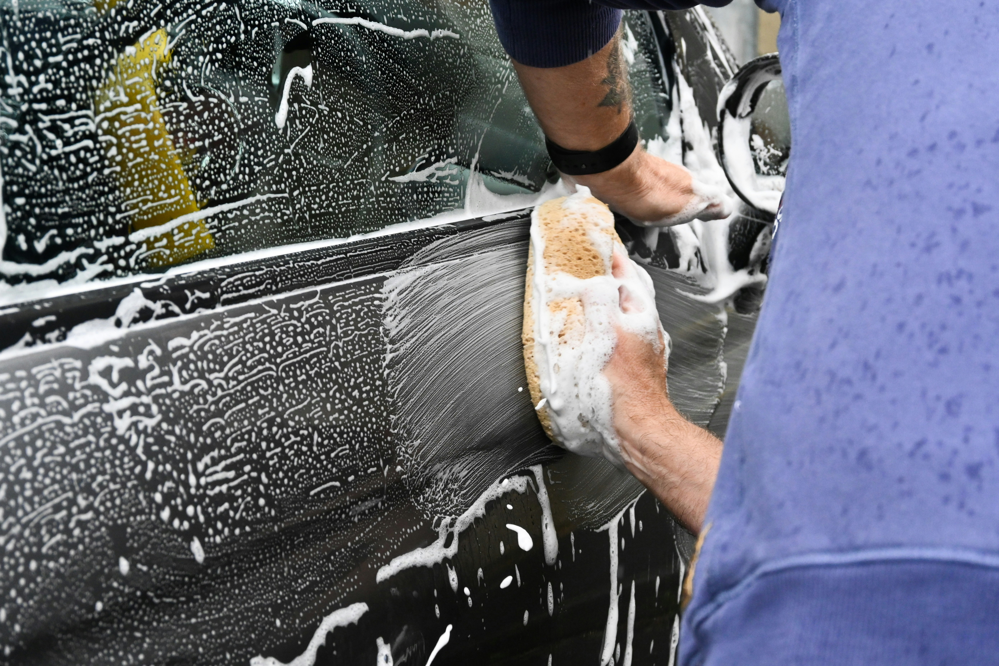
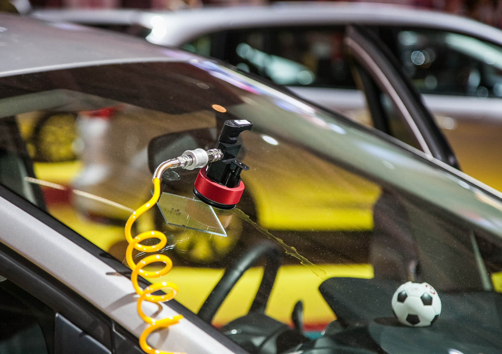

VSK Autószerviz Nyíregyháza – Üdvözlünk a honlapunkon
Több éves versenymúlttal rendelkező autószerviz vagyunk, akik
elkezdtek nyitni az utcai felhasználók felé is. Az a hitvallásunk, hogy a versenyszférában megszerzett
tapasztalatokat és felkészítést az utcai vezetők is megtapasztalhassák professzionalizmusunk által.
250+
150+
Autószervizt végeztünk el
Elégedett pilóta és ügyfél
Szolgáltatások
Márkafüggetlenül bármilyen típusú és hajtású autók szervizelése nagy tapasztalattal, szakértelemmel és
odaadással.
Kapcsolatban állunk a legnagyobb alkatrész nagykereskedésekkel, így mindig a legjobb minőséget tudjuk
biztosítani.
Legyen szó akár a műszaki vizsga előtti, esetleg időszakos átvizsgálásról vagy bármilyen jellegű
javításról, fontos, hogy autója megbízható kezekben legyen!
Nálunk személyesen meggyőződhet minden beépített alkatrészről. Versenymúltunk miatt mindig a
legújabb technológiákat alkalmazzuk, így a lehető legjobb szolgáltatást nyújtjuk Önnek és autójának. Versenypálya-precizitás, utcai árakon — Nyíregyháza márkafüggetlen szervize
Gyors szerviz
Olajcsere & Váltóolaj és szűrők cseréje
Féktárcsa és fékbetét cseréje
Időszakos szerviz
Teljeskörű motorfelújítás és javítás
Kötelező időszakos szerviz
Műszakira való felkészítést
Futómű javítás
Diagnosztika
Hibakód és hibatároló kiolvasása
Műszeres diagnosztika
Élőadat elemzés
Autóvillamosság
Önindító/generátor felújítás/javítás
Teljes autóelektronikai javítások
Központi zár javítás
Auto üveg
Szélvédőjavítás és -csere
Oldal- és hátsó üvegek cseréje
Kőfelverődés-javítás
Autókozmetika
Külső és belső tisztítás
Polírozás és fényezésápolás
Kárpittisztítás és bőrápolás
Gumiszerviz
Gumiabroncs-szerelés és -csere
Kerékcentírozás és defektjavítás
Szezonális gumicsere
Polírozás
Diagnosztika
Kerékcsere
Motorfelújítás
Autóvillamosság
Tisztítás
Történetünk

Magyarországon elsők között kezdtük el használni a hibrid technológiát több verseny szériában is, mint például
a SWIFT HYRID RX CUP-ban, Zalazone átadó, 2020 Országos Bajnokság Kakucsringen ezenfelül MNASZ-szel (Magyar
Nemzeti Autósport Szövetség) is szerződésben állunk. A hibrid hajtás teljes mértékben saját fejlesztésünk, nem
a létező Suzuki hibrid hajtást alakítottuk át.
Youtube megjelenésünk

Maximalizmusunknak és professzionalizmusunknak hála, versenyzőink a legtöbbet képesek kihozni
versenyautóinkból, emiatt több verseny sorozatban is sikeresen helytálltak és győzedelmeskedtek, legyen szó
aszfaltról vagy murváról.
Rallypass megjelenésünk
Ajánlataink

Hibrid versenyautóinknak köszönhetően nagyon sok tapasztalattal rendelkezünk autóvillamosság terén. Ezen oknál
fogva gyorsan tudjuk diagnosztizálni és javítani a hibát. Univerzális diagnosztikai szoftvert használunk,
amivel a márkák nagy részét lefedjük.
Érdekel
Mi adunk a minőségre, mi nálunk nincs olyan, hogy "jól van az úgy". Mi hivatásszerűen és legjobb tudásunk
által végezzük el a napi feladatainkat, legyen szó egyszerű olajcseréről vagy motorgenerálról.
Érdekel

Szezonális gumiváltástól a kerékszerelésig és a kerékegyensúlyozásig mindent elvégzünk. Gyorsan, precízen –
legyen szó nyári, téli vagy négy évszakos gumikról. Szervizünkben korszerű egyensúlyozó és szerelő
berendezésekkel dolgozunk, hogy autódat biztonságosan és pénztárcabarát áron kapja vissza.
Érdekel

Nem csak a műszaki állapot, hanem az autó megjelenése is fontos. Külső és belső tisztítás, polírozás,
kárpittisztítás mindezt professzionális eszközökkel és minőségi tisztítószerekkel végezzük, hogy autód ne csak
jól működjön, hanem jól is nézzen ki.
Érdekel

Akár legyen szó kisebb kavicsfelverődésről, vagy akár nagyobb szélvédő sérülésről keressen minket bizalommal!
Érdekel
Nézd meg hogyan dolgozunk
Valódi felvételek a műhelyünkből – napról napra
Rólunk mondták
Konrád
Ügyfél
Amióta megnyitották utcai szervizüket azóta hordom hozzájuk
szervizelni az A7-es Audimat, nagyon kedvesek és segítőkészek. Profi csapat csak ajánlani tudom őket.
Tóth Gábor
Autótulajdonos
A családi kombinkat évek óta ide hozom. Mindig őszintén
megmondják, mi a valódi hiba, és nem akarnak felesleges javítást rásózni az emberre. Korrekt árak, gyors
munka – pontosan ezt várom el egy szerviztől.
Nagy Péter
Flottakezelő
Cégünk több mint 10 autóját bízzuk a VSK-ra. Rugalmasan ütemezik
a szervizeléseket, így a járműveink minimális állásidővel kerülnek vissza a forgalomba. Megbízható partner,
akire egy egész flotta karbantartását nyugodtan rá lehet bízni.